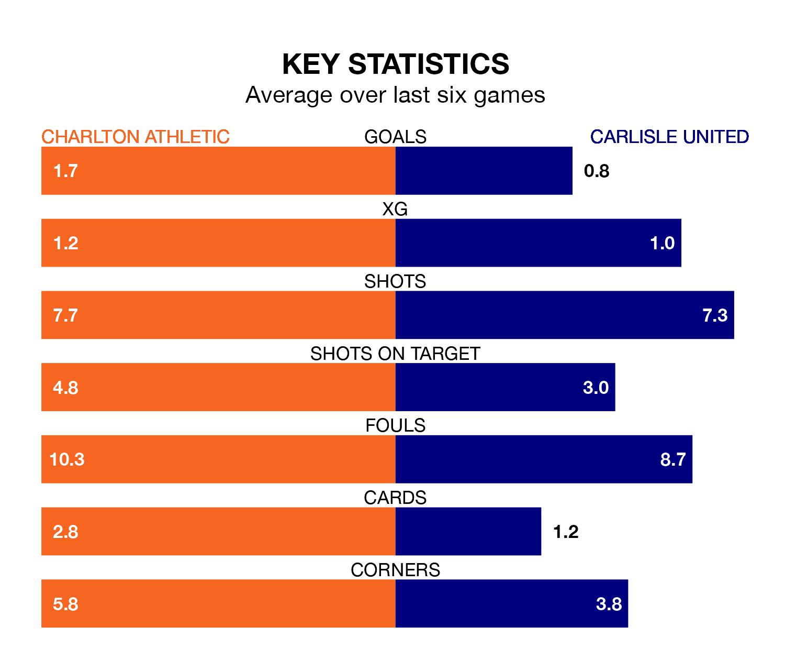

Charlton Athletic face Carlisle United on Saturday seeking to protect their long unbeaten run in EFL League One.
The Addicks are unbeaten in six, with two wins and four draws, ahead of the 3pm kick-off.
They face a Carlisle team who have won just one and lost five over the same number of games.
Carlisle are bottom of the table after 35 games, of which they have won five and drawn eight, earning 23 points.
Charlton are nine places ahead of United in 15th, with nine wins and 14 draws putting them on 41 points.
In Alfie May, Athletic have the league's most on-form striker so far this season. He has notched 18 goals in 34 appearances.
His goal rate of one every 158 minutes is much quicker than that of Jordan Gibson, the away side's top scorer with a goal every 329 minutes, and a total of seven goals in 33 games.
With 29 goals in 35 games so far this season, Carlisle are scoring at below the league average rate with 0.8 goals per game. And they are conceding more than average, letting in 60 goals at a rate of 1.7 per game.
The Addicks, meanwhile, are above average scorers, with 1.4 goals per game, compared to a league average of 1.3. They have conceded 1.5 goals per game.
Charlton's last match was on Tuesday, a 3-1 win against Cheltenham Town, with Daniel Kanu, May and Tyreeq Bakinson getting the goals for the Addicks.
Carlisle lost 3-1 against Reading last time out, on March 2, with Jon Mellish on the scoresheet.
Saturday's match will be refereed by Tom Nield, who has taken charge of five EFL League One games so far this season, issuing one red card and booking 26 players. He has awarded one penalty.
The last Carlisle game Nield refereed was the 1-1 draw away at Lincoln City on September 16. He is yet to oversee a match featuring Charlton this season.
Updated: 09:34 (UTC), 08/03/24